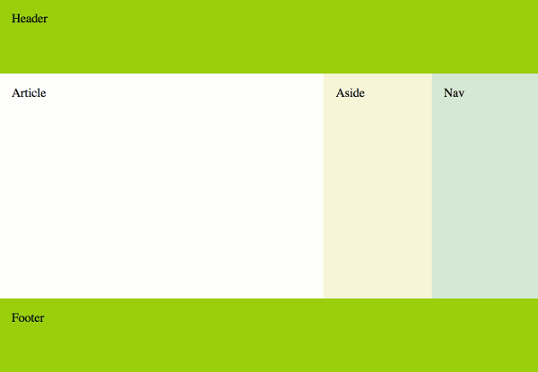
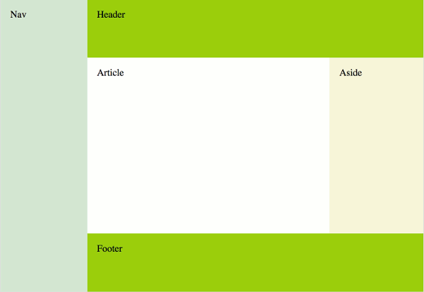
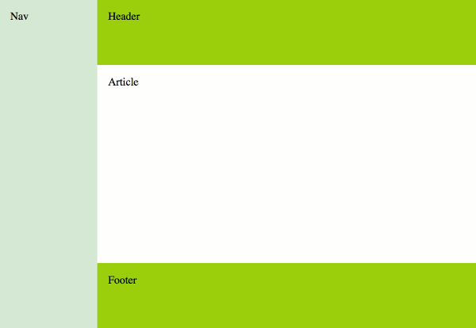
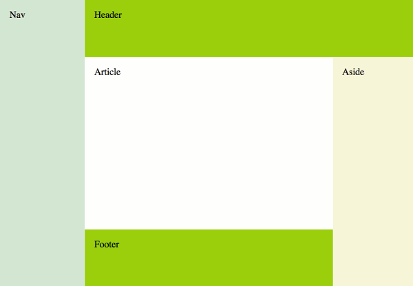
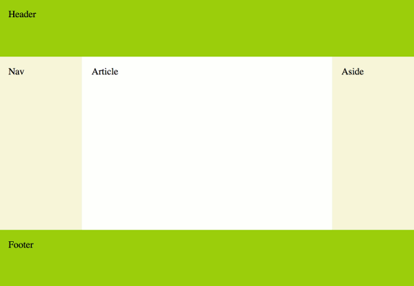
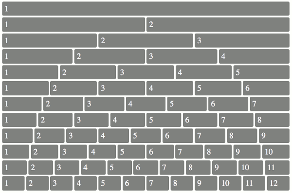

- display : flex
- flex-direction : row, column
- flex-wrap : nowrap, wrap
- justify-content : nowrap, wrap
- align-items : stretch, start, end, center
- gap -шоткат- : row-gap column-gap
Свойства flex-контейнера
Свойства flex-элемента
Примеры использования Flexbox для адаптивной верстки
Принципиальная разница между display:block, display:flex
Практика





